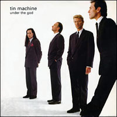
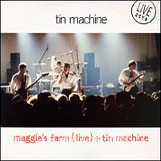
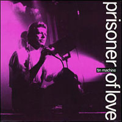

Even when bolstered by The Spiders From Mars, Bowie never posed with his band for an album cover; he was more likely to be seen with mutant hounds (Diamond Dogs) or '60s supermodel Twiggy (Pin Ups). Tin Machine, however, were conceived as a back-to-basics rock band run along democratic lines. Bowie provided vocals and guitar alongside lead guitarist Reeves Gabrels and sibling duo Tony Fox Sales (bass) and Hunt Sales (drums). A wry visual gag, however, saw the most famous band member relegated to the background on their debut album's CD cover (the vinyl and cassette editions pictured alternative arrangements), while the group's suited-and-booted look complemented their apparent democracy, as if all four bandmates had equal shares in a business.
Designer: Roger Gorman
HEAVEN'S IN HERE
Baby I dream between the blade and the tongue
Of the rose on your cheek the wounded and dumb
We stumble and fall we stumble and fall
Skin on skin but there's heaven in...
Heaven's in here
Heaven's in here
Among the twilight and stars
Like a rocket to Mars
Heaven in here
The first and the last are telling it all
Telling you loud but selling it small
I'm taking a swing at this shadow of mine
Crucifix hangs an' my heart's in my mouth
But it's here
Heaven's in here
Heaven's in here
Among the twilight and stars
Like a rocket to mars
Heaven in here
Heaven in one sigh
Heaven in two eyes
Heaven lies between your marbled thighs
The rustle of your falling gown
We stumble and fall like tragedy falls
We stumble and twirl there's heaven in here
We stumble and fall uncertain we fall
Flesh on flesh but there's heaven in...
Heaven's in here
Heaven's in here
Heaven's in here
Among the twilight and stars
Like a rocket to Mars
Heaven in here
You'll dance to my tongue we'll dance on the sun
We're the twilight and stars
There's heaven in here
TIN MACHINE
Tin machine
Tin machine
Take me anywhere
somewhere without alcohol
Or goons with muddy hair
Tin machine
Tin machine
Tin machine
Tin machine
The zombies that I pass
The guy that beats his baby up
The preachers and their past
Tin machine
Tin machine
Tin machine
Baby doll
Baby doll
Clarity and power
There's more than money moving here
There's mindless maggot glare
Working horrors-humping Tories
Spittle on their chins
Carving up my children's future
Read 'em pal and grin
Raging raging raging
Burning in my room
C'mon and get a good idea
C'mon and get it soon
I'm waiting on the fire escape
I'm not exactly well
I'm neither red nor black nor white
I'm grey and blown to hell
Tin machine
Tin machine
Make some new computer thing
That puts me on the moon
Not this psycho-time-bomb planet
Poised to meet its maker
Shake a leg
Tin machine
Tin machine
One sick deathless duty to remain endangered species
They reach right out to touch someone
Then wash their crusty hands
Tin machine
Tin machine
Baby doll
Baby doll
Blue suede tuneless wonders
Mass confusion-faithless blues
Night that spews out watchmen
Mopping up another fortune
Fractured words and branca-sonic
Anger trapped behind locked doors
And right between the eyes
PRISONER OF LOVE
Don't look back
Whatever it takes to save your life
I've believed I belonged to you for a long time
And my heart says no, no one but you
Like a rescue on a darkened street
Love walked into town
I was a victim of my own self-persecution
I'm a prisoner of love-but I'm coming up for air
Now don't be fooled by fools who promise you
The world and all that glitters more fool you
I'm such a hungry man that I beg you over and over and over and over
And I might take any highway to be there with you
Even the best men shiver in their beds
I'm loving you above everything I have
I'm a prisoner of love-just stay square
Like a sermon on a blues guitar
Love walked into town
I was drowning so slowly
One step in front of your shadow
I'm a prisoner of love but I'm coming up for air
Now don't be fooled by fools who promise you
The world and all that glitters more fool you
I smell the sickness sown in this city
It drives me to hide you, yea, even deceive you
I'm so afraid for you that
I'll break any thug that maps out your passage to ruin
Even the best men shiver in their beds
I'm loving you above everything I have
I'm a prisoner of love-just stay square
CRACK CITY
Oh come all you children
Don't grab that scabby hand
It belongs to Mr. Sniff and Tell
It belongs to the candyman
Don't whore your little bodies
The worms of paradise
Like Everest it's fatal
Its peaks are cold as ice
They're riding on the subways
They're riding on the streets
They'll ride you down to the gutters
They'll ride you off your feet
Gonna hit Crack City
Hit Crack City
Piss on the icon monsters
Whose guitars bequeath you pain
They'll face you down to their level
With their addictions and their fast lanes
Corrupt with shaky visions
And crack and coke and alcohol
They're just a bunch of assholes
With buttholes for their brains
You can't keep on riding
The pain you know so well
They'll ride you down to the gutter
They'll ride you down to hell
Gonna hit Crack City
Hit Crack City
And you the master dealer
May death be on your brow
May razors slash your mainline
I'm calling you out right now
May all your vilest nightmares
Consume your shrunken head
May the ho-ho-hoounds of paranoia
Dance upon your stinking bed
Don't look at me you fuckhead
This nation's turning blue
Its stink it fouls the highways
Its filth it sticks like glue
Gonna hit Crack City
Hit Crack City
They'll bury you in velvet
And place you underground
The hatred of yourself
And the sufferings that conspire
To take your little body and throw it to the fools
And the hounds that rip your flesh
Only your mind can take you out of this
Only your mind or death
I'm riding on the subway
The subway down to hell
I've finished with this journey
I seem to know it well
Gonna hit Crack City
Hit Crack City
I CAN'T READ
I can't read and I can't write down
I don't know a book from countdown
I don't care which shadow gets me
All I've got is someone's face
Money goes to money heaven
Bodies go to body hell
I just cough, catch the chase
Switch the channel watch the police car
I can't read shit anymore
I just sit back and ignore
I just can't get it right, can't get it right
I can't read shit I can't read shit
When you see a famous smile
No matter where you run your mile
To be right in that photograph
Andy where's my fifteen minutes
I can't read shit anymore
I just sit back and ignore
I just can't get it right, can't get it right
I can't read shit I can't read shit
UNDER THE GOD
Skin dance back-a-the condo
Skin heads getting to school
Beating on Blacks with a baseball bat
Racism back in rule
White trash picking up Nazi flags
While you was gone, there was war
This is the West, get used to it
They put a swastika over the door
Under the God
Under the God
One step over the red line
Under the God
Under the God
Ten steps into the crazy
Washington heads in the toilet bowl
Don't see supremicist hate
Right wing dicks in their boiler suits
Picking out who to annihilate
Toxic jungle of Uzi trails
Tribesmen just wouldn't live here
Fascist flare is fashion cool
Well, you're dead - you just ain't buried (yet)
Under the God
Under the God
One step over the red line
Under the God
Under the God
Ten steps into the crazy
As the walls came tumbling down
So, the secrets that we shared
I believed you by the palace gates
Now the savage days are here
Under the gods
Crazy eyed man with a shot gun
Hot headed creep with a knife
Love and peace and harmony
Love you could cut with a life
Under the God
Under the God
One step over the red line
Under the God
Under the God
Ten steps into the crazy
AMAZING
I'm lazy
You crazy girl
Stay by my side
I'm scared you'll
Meet someone
In whom you'll confide, no no no
Life's still a dream
Your love's amazing
Since I found you
My life's amazing
I pledge you'll
Never be blue
There's too much at stake to be down
My nightmare
Rooted here watching you go
Divine in both our lives
Life's still a dream
Your love's amazing, amazing
Since I found you
My life's a roll, go go go
And it's amazing
It's amazing
Go, go, go
It's amazing
Ow
Ow
Ow
Go, go, go
Ow
Ow
It's amazing
WORKING CLASS HERO
As soon as you're born they make you feel small
By giving you no time instead of it all
Till the pain is so big you feel nothing at all
A working class hero is something to be
A working class hero is something to be
They hurt you at home and they hit you at school
They hate you if your clever and they despise a fool
Till you're so fucking crazy you can't follow their rules
A working class hero is something to be
A working class hero is something to be
When they've tortured and scared you for 20 odd years
Then they expect you to pick a career
When you can't really function you're so full of fear
A working class hero is something to be
A working class hero is something to be
Keep you doped wit religion and sex and TV
And you think you're so clever and classless and free
But you're still fucking peasants as far as I can see
A working class hero is something to be
A working class hero is something to be
There's room at the top they are telling you still
But first you must learn how to smile as you kill
If you want to be like the folks on the hill
A working class hero is something to be
If you want to be a hero just follow me
If you want to be a hero well just follow me
BUS STOP
There's a cry that is heard in the city
From Vivian at Pentecost Lane
A shriekin' and dancing till 4 a.m.
Another night of muscles and pain
I love you despite your convictions
That God never laughs at my jokes
I'm a young man at odds with the Bible
But I don't pretend faith never works
When we're down on our knees
Prayin' at the bus stop
Now Jesus he came in a vision
And offered you redemption from sin
I'm not saying that I don't believe you
But are you sure that it really was him
I've been told that it could've been blue cheese
Or the meal that we ate down the road
I'm a young man at odds with the Bible
But I don't pretend faith never works
When we're down on our knees
Prayin' at the bus stop
Hallelujah
I'm a young man at oods with the Bible
But I don't pretend faith never works
When we're down on our knees
Prayin' at the bus stop
PRETTY THING
Think about the good things
Think about the bad things
Think about a reason to see you tonight
Something getting hard when you rock it up
Something getting hot when you rock it up
Pretty little girl let your sweet thing sway
Never gonna treat you wrong
Tie you down pretend you're Madonna
Never gonna treat you wrong
Oh you pretty thing
Shake your pretty thing
Gimmee that pretty thing
Think about the love thing
Think about the sex thing
Think about you holding me, taking me down
Something getting hard when you rock it up
Something getting hot when you rock it up
Pretty little girl let your sweet thing sway
Never gonna do you wrong
Strip you down and take you to pieces
Always gonna love this song
Oh you pretty thing
Feel that pretty thing
Suck that pretty thing
VIDEO CRIME
Ain't got room for charity
Me, I'm crawling with no cash
Me, I'm looking for hot flesh
This skeleton's mine
Chop it up
Chop it up
Blood on video-video crime
Video crime
Needles and pins and video crime
Video crime
I've got dollars-I've got sense
Wonder where the Third World went
Ain't got time for honeymoon (chop it up)
Trash Time Bundy, Death Row Chic (chop it up)
Haunt this street from half past ten (chop it up)
Blood on video-video crime
Video crime
Needles and pins and video crime
Video crime
Late night cannibal-cripples decay
Just can't tear my eyes away
Ain't got no room for charity (this skeleton's mine)
Ain't got room for Hollywood (chop it up)
Me, I'm crawling with no cash (chop it up)
Blood on video-video crime
Video crime
Needles and pins and video crime
Video crime
I've got dollars I've got sense
Wonder where the Third World went
RUN
Wish I were a sailor
Crossing an azure sea
Under leaden skies
Under your eyes
But I can't see too far
With these animal eyes
Can't hold my breath
Without your voice
An' I'm danger-prone
I'll be bound
I'll be fast as hell
Without your touch
An' I'll run run run run run
An' I'll run run run run run
Without your love
I'm a goldman
I'm a soaring tower
And it's cold in here
Without your love
Trouble in here-trouble out there
Mainline problems til you no longer care
Get a long-low life-it's duty bound
No hope-no life-no you-ah ha
And I run run run
Run run run
Without your love
I duck the shots-tilt the world
I talk myself crazy-shoot the breeze
Shout to live-shoot to kill
Double up in pain-I'm on my knees
SACRIFICE YOURSELF
Some days he feels so empty
Just a talking head
Married to a Klingon
Who could cream him in the press
God could detonate him
God's the one we pick to curse us
And 35 years pass him
Like an evening at the circus
Don't sacrifice yourself
Sacrifice yourself
Surprise yourself
Don't sacrifice yourself
There it is, the look, the winner you
Once talked of being
Give her one last kiss and
Dive right out the window screaming
No truth decent, It was summer from the waist down
She blew the troops right off your feet
She tells you she's God's grammy
Don't sacrifice yourself
Sacrifice yourself
Surprise yourself
Don't sacrifice yourself
Her, the only game in town, a queen of competence
Blind in front of mirrors, proving nothings says a lot
Wham bam thank you Charlie
Vanity is all
You wander lonely to the scene
A crawling up the walls
Don't sacrifice yourself
Sacrifice yourself
Surprise yourself
Don't sacrifice yourself
BABY CAN DANCE
I'm rolling out of the ferris wheel
No one looks and no one feels
But the baby can
The baby can
The way it feels just feeling you
Holding out and falling out
But the baby can
The baby can
I'm the jumping man
I'm the jumping man
But baby can float
Baby can drown
Baby can touch her toes
Toss her hair
Makes you feel you're going nowhere
Baby can dance
Baby can dance
Baby can walk around the town
Attract a man and cut him down
I'm the shadow man the jumping jack
The man who can and don't look back
But the baby can
The baby can
I'm rolling out of the ferris wheel
No one looks and no one feels
But the baby can
The baby can
And the way it feels
I'm feeling you
But baby can float
Baby can drown
Baby can touch her toes
Toss her hair
Makes you feel you're going nowhere
Baby can dance
Baby can dance
Baby can walk around the town
Attract a man and cut him down
Everyday is far away
Everyday, everyday
It's over now
It's over now
I'm the jumping man
I'm the jumping man
But baby can float
Baby can drown
Baby can touch her toes
Toss her hair
Makes you feel you're going nowhere
Baby can dance
Baby can dance
Baby can walk around the town
Attract a man and cut him down
SINGLES


